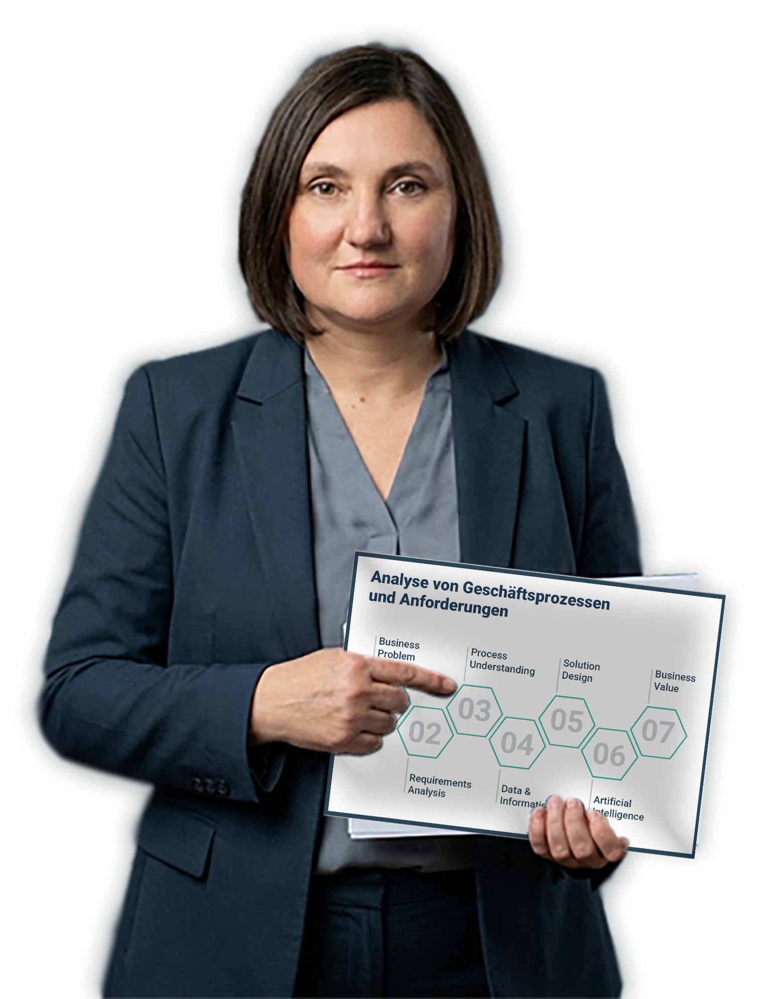

FAINA
KOZYRIEVA
Business Analysis | Data Analytics | AI Solutions

Business Transformation & AI
Projektziel
Текст опису другого проєкту...
Projektziel
Текст опису першого проєкту...
Business Analyse, Datenanalyse und Künstliche Intelligenz verstehe ich nicht als getrennte Disziplinen, sondern als einen gemeinsamen Weg zur Verbesserung von Entscheidungsprozessen.
Mit langjähriger Erfahrung in Strategieentwicklung, Prozessgestaltung, Kommunikation und Reporting verbinde ich fachliche Anforderungen mit modernen Datenlösungen.
Heute liegt mein Fokus auf der Entwicklung intelligenter Assistenzsysteme, datengetriebener Analysen und verständlicher Dashboards für Verwaltung und Unternehmen.
Besonders interessieren mich Projekte an der Schnittstelle von Business Analyse, Data Analytics und Generativer KI, bei denen innovative Technologien einen echten Mehrwert schaffen.
Ich arbeite strukturiert, lösungsorientiert und mit hoher Aufmerksamkeit für Qualität, Transparenz und nachhaltige Ergebnisse.
Lass uns sprechen
Ich freue mich auf den Austausch über Business Analyse, Data Analytics, Prozessoptimierung und KI-gestützte Lösungen.
Kontakt aufnehmen